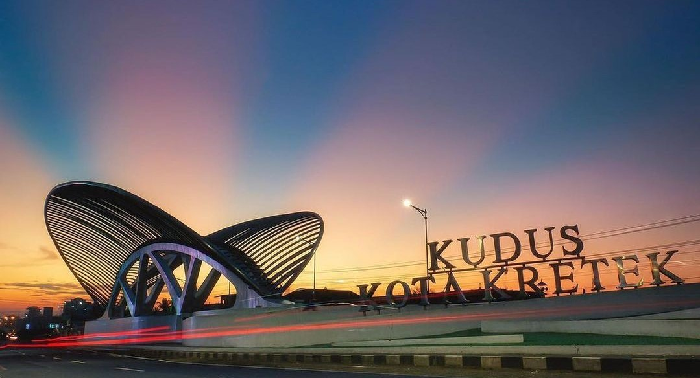

Bagaimana sih Kudus itu?
Jika Anda mendengar nama Kudus, kira kira apa yang terbayang dipikiran Anda? Iya, Kota Kretek, Kota Santri, selain itu ternyata Kudus juga mempunyai banyak destinasi wisata umum, kuliner, religi, bahkan Alam, karena tempatnya yang strategis dan terdapat gunung muria, tak heran jika Kudus memiliki destinasi wisata Alam yang banyak, entah itu Air terjun, Bukit, Pegunungan, bahkan juga tempat camping.
Penasaran bukan dengan kota kecil yang satu ini, Kota ini tepatnya berada di provinsi Jawa Tengah ini yang biasa dikenal dengan kota Santri, kota Kretek dan masih banyak lagi, yuk simak lebih lanjut tentang informasi wisata yang ada di Kudus, banyak banget destinasi wisata entah itu wisata Umum, Alam, Kuliner bahkan Religi
Gerbang Kudus Kota Kretek

Kudus Kota Kretek
Jika Anda memasuki kota Kudus dari arah selatan, tentu Anda akan melihat Gerbang Kudus Kota Kretek atau yang biasa disebut dengan GKKK, "Gerbang Kudus Kota Kretek" memiliki filosofi dalam setiap unsur bangunannya. Bagian atas yang berbentuk daun tembakau dengan jumlah jari-jari sebanyak 59 ruas memiliki makna tersirat. Angka 5 sebagai lambang Rukun Islam dan angka 9 memaknai Wali Sanga.
Sementara bagian bawah gerbang yang dibangun berbentuk empat tiang cengkeh yang menopang daun tembakau, sejatinya melambangkan empat pilar kebangsaan: Pancasila, UUD 1945, Bhinneka Tunggal Ika, dan NKRI. Bangunan ini tepatnya berada di kawasan Taman Tanggul Angin, Kecamatan Jati, Kabupaten Kudus.
"Gerbang Kudus Kota Kretek" ini semakin menarik jika melihatnya pada malam hari, banyak sekali lampu lampu disekitar Monumen ini, yang terlihat seakan estetik
Klik untuk melihat lokasi terkait
Alun alun Kudus

Simpang 7 Kudus
Eitsss!! tidak hanya itu, pada tengah Kudus juga terdapat Alun Alun Kudus atau bisa disebut dengan Simpang 7 Kudus, disekitar Simpang 7 Kudus sendiri terdapat kuliner-kuliner seperti pedanag kaki lima, cafe, atau bahkan mall
Siapa sih yang gatau Simpang 7 Kudus? selain tempatnya yang strategis, berada di tengah Kudus, biasanya juga di Simpang 7 Kudus terdapat Car Free Day dan Car Free Night pada hari Minggu.
Klik untuk melihat lokasi terkait